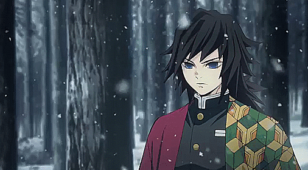
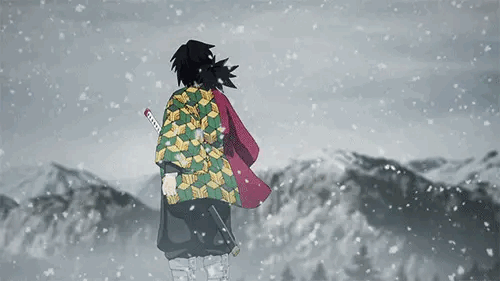

Accueil
Bienvenue ce site est une présentation des personnages de Demon Slayer
Je vous propose de commencer par un bref résumer afin d’entrée mielleusement dans l’univers du merveilleux Japon traditionnel et une présentation des deux camps : Monstre, Pourfondeur
Ps : je ne parlerais que de ce qui a été vu dans l’animé
